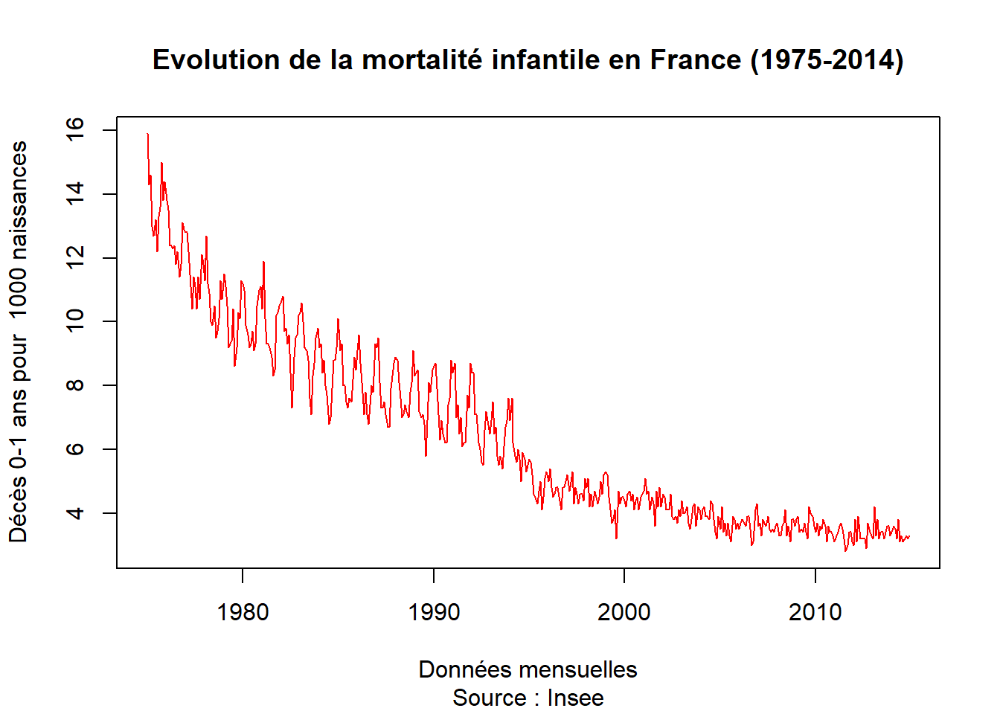
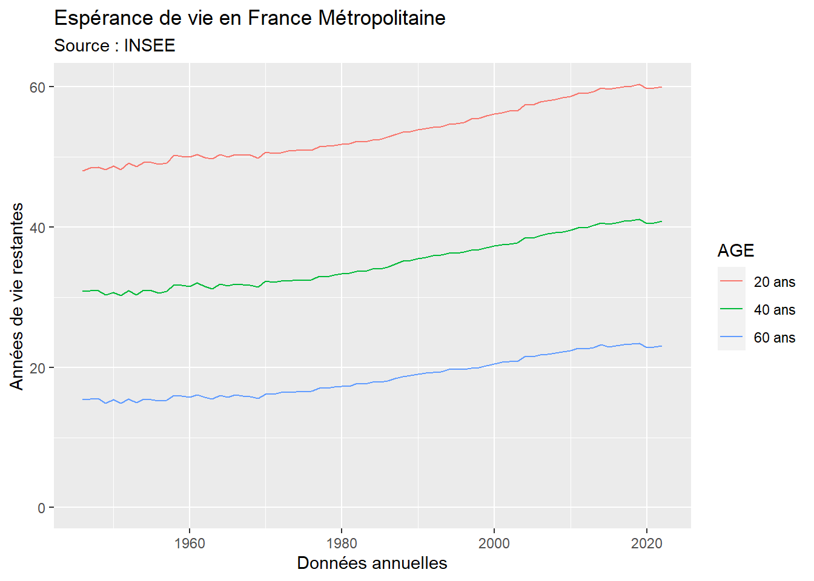
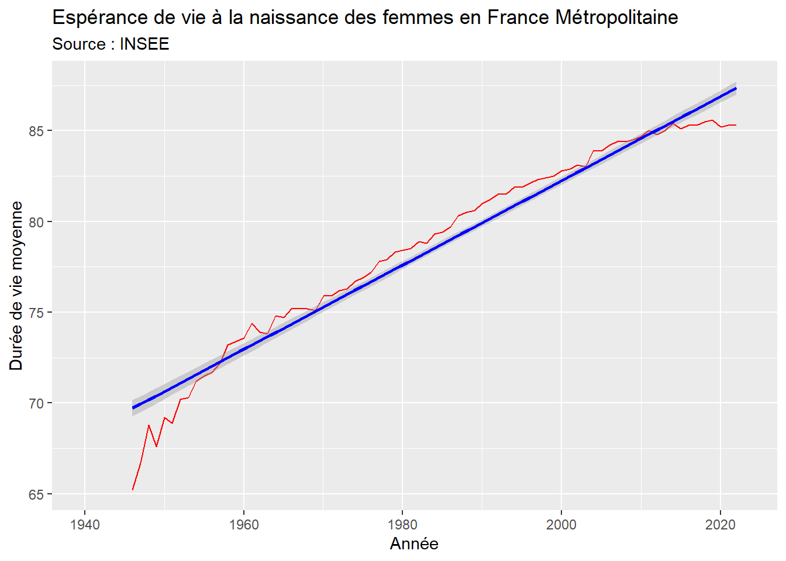

### Normal version
# install.packages("insee")
### Development version
# devtools::install_github("InseeFr/R-Insee-Data")L’API INSEE
L’utilisation d’API à l’aide des fonctions de base httpr et jsonlite constitue à moyen terme une étape indispensable de la formation d’un data analyste. Mais heureusement elle n’est pas toujours indispensable pour le débutant car plusieurs packages R (ou Python) ont été développées par des programmeurs pour faciliter l’usage des API.
Ces packages executent en pratique les commandes de l’API, mais sans que l’utilisateur ait besoin d’avoir aucune connaissance sur la syntaxe de la fonction GET() qui a collecté les données ni des transformations effectuées sur les résultats pour transformer les données JSON en data.frame ou tibble. La connaissance de ces packages spécialisées offre donc une grosse économie de temps … s’ils ont été bien conçus.
On va prendre comme exemple le package insee mis au point récemment pour faciliter l’accès aux données de cette organisation. La documentation du package est accessible par le lien ci-dessous
https://pyr-opendatafr.github.io/R-Insee-Data/articles/insee.html
Mode d’emploi
On commence par installer le package insee ce qui peut prendre quelques minutes mais sera fait une seule fois (sauf mise à jour).
On peut ensuite lancer le package pour l’utiliser avec library() et on ajoute le package tidyverse que l’INSEE semble privilégier pour l’exploitation des données :
library(insee)
library(tidyverse,warn.conflicts = F)
library(knitr)Chargement de la liste des tableaux
On commence par télécharger le catalogue des tableaux de données disponibles,à l’aide de la commande get_dataset_list()
catalogue = get_dataset_list()
kable(head(catalogue))| id | Name.fr | Name.en | url | n_series |
|---|---|---|---|---|
| BALANCE-PAIEMENTS | Balance des paiements | Balance of payments | https://www.insee.fr/fr/statistiques/series/103212755 | 197 |
| CHOMAGE-TRIM-NATIONAL | Chômage, taux de chômage par sexe et âge (sens BIT) | Unemployment, unemployment rate and halo by sex and age (ILO) | https://www.insee.fr/fr/statistiques/series/103167923 | 169 |
| CLIMAT-AFFAIRES | Indicateurs synthétiques du climat des affaires | Business climate composite indicators | https://www.insee.fr/fr/statistiques/series/103047029 | 3 |
| CNA-2010-CONSO-MEN | Consommation des ménages - Résultats par produit, fonction et durabilité | Households’ consumption - Results by product, function and durability | https://www.insee.fr/fr/statistiques/series/102331845 | 2247 |
| CNA-2010-CONSO-SI | Dépenses de consommation finale par secteur institutionnel - Résultats par opération et produit | Final consumption expenditure by institutional sectors - Results by transaction and product | https://www.insee.fr/fr/statistiques/series/102809534 | 1391 |
| CNA-2010-CPEB | Comptes de production et d’exploitation par branche | Production and operating accounts by branch | https://www.insee.fr/fr/statistiques/series/102852781 | 2739 |
Chaque tableau comporte un très grand nombre de séries chronologiques parmi lesquelles il faut opérer un choix afin d’extraire exactement ce que l’on veut.
Examen des séries présentes dans un tableau
Une fois que l’on a choisi un tableau, on peut examiner plus en détail les différentes séries qui y sont présentes à l’aide de la commande get_idbank_list(). On va par exemple examiner le contenu de la base de données “DECES-MORTALITE” :
var<-get_idbank_list("DECES-MORTALITE")
str(var)FALSE tibble [1,905 × 33] (S3: tbl_df/tbl/data.frame)
FALSE $ nomflow : chr [1:1905] "DECES-MORTALITE" "DECES-MORTALITE" "DECES-MORTALITE" "DECES-MORTALITE" ...
FALSE $ idbank : chr [1:1905] "000067679" "000067680" "000067681" "000436394" ...
FALSE $ cleFlow : chr [1:1905] "A.NOMBRE_DECES.VALEUR_ABSOLUE.DECES.FM.0.SO.INDIVIDUS.BRUT.FALSE" "A.TAUX_MORTALITE.TAUX.TXMOR.FM.0.SO.DECES_1000_PERS.BRUT.FALSE" "A.TAUX_MORTALITE.TAUX.TXMORINF.FM.0.SO.P1000.BRUT.FALSE" "M.NOMBRE_DECES.VALEUR_ABSOLUE.DECES.FM.0.SO.INDIVIDUS.BRUT.FALSE" ...
FALSE $ FREQ : chr [1:1905] "A" "A" "A" "M" ...
FALSE $ INDICATEUR : chr [1:1905] "NOMBRE_DECES" "TAUX_MORTALITE" "TAUX_MORTALITE" "NOMBRE_DECES" ...
FALSE $ NATURE : chr [1:1905] "VALEUR_ABSOLUE" "TAUX" "TAUX" "VALEUR_ABSOLUE" ...
FALSE $ DEMOGRAPHIE : chr [1:1905] "DECES" "TXMOR" "TXMORINF" "DECES" ...
FALSE $ REF_AREA : chr [1:1905] "FM" "FM" "FM" "FM" ...
FALSE $ SEXE : chr [1:1905] "0" "0" "0" "0" ...
FALSE $ AGE : chr [1:1905] "SO" "SO" "SO" "SO" ...
FALSE $ UNIT_MEASURE : chr [1:1905] "INDIVIDUS" "DECES_1000_PERS" "P1000" "INDIVIDUS" ...
FALSE $ CORRECTION : chr [1:1905] "BRUT" "BRUT" "BRUT" "BRUT" ...
FALSE $ SERIE_ARRETEE : chr [1:1905] "FALSE" "FALSE" "FALSE" "FALSE" ...
FALSE $ FREQ_label_fr : chr [1:1905] "Annuelle" "Annuelle" "Annuelle" "Mensuelle" ...
FALSE $ FREQ_label_en : chr [1:1905] "Annual" "Annual" "Annual" "Monthly" ...
FALSE $ INDICATEUR_label_fr : chr [1:1905] "Nombre de décès" "Taux de mortalité" "Taux de mortalité" "Nombre de décès" ...
FALSE $ INDICATEUR_label_en : chr [1:1905] "Number of dead" "Mortality rate" "Mortality rate" "Number of dead" ...
FALSE $ NATURE_label_fr : chr [1:1905] "Valeur absolue" "Taux" "Taux" "Valeur absolue" ...
FALSE $ NATURE_label_en : chr [1:1905] "Absolute value" "Rate" "Rate" "Absolute value" ...
FALSE $ DEMOGRAPHIE_label_fr : chr [1:1905] "Décès de tous âges" "Taux de mortalité" "Taux de mortalité infantile" "Décès de tous âges" ...
FALSE $ DEMOGRAPHIE_label_en : chr [1:1905] "Deaths of all ages" "Mortality rate" "Infant mortality rate" "Deaths of all ages" ...
FALSE $ REF_AREA_label_fr : chr [1:1905] "France métropolitaine" "France métropolitaine" "France métropolitaine" "France métropolitaine" ...
FALSE $ REF_AREA_label_en : chr [1:1905] "Metropolitan France" "Metropolitan France" "Metropolitan France" "Metropolitan France" ...
FALSE $ SEXE_label_fr : chr [1:1905] "Ensemble" "Ensemble" "Ensemble" "Ensemble" ...
FALSE $ SEXE_label_en : chr [1:1905] "All" "All" "All" "All" ...
FALSE $ AGE_label_fr : chr [1:1905] "Sans objet" "Sans objet" "Sans objet" "Sans objet" ...
FALSE $ AGE_label_en : chr [1:1905] "Not applicable" "Not applicable" "Not applicable" "Not applicable" ...
FALSE $ UNIT_MEASURE_label_fr : chr [1:1905] "individus" "nombre de décès pour 1 000 personnes" "pour mille" "individus" ...
FALSE $ UNIT_MEASURE_label_en : chr [1:1905] "individuals" "number of deaths per 1,000 inhabitants" "per thousand" "individuals" ...
FALSE $ CORRECTION_label_fr : chr [1:1905] "Non corrigé" "Non corrigé" "Non corrigé" "Non corrigé" ...
FALSE $ CORRECTION_label_en : chr [1:1905] "Uncorrected" "Uncorrected" "Uncorrected" "Uncorrected" ...
FALSE $ SERIE_ARRETEE_label_fr: chr [1:1905] "non" "non" "non" "non" ...
FALSE $ SERIE_ARRETEE_label_en: chr [1:1905] "nO" "nO" "nO" "nO" ...Le résultat est un tibble comportant 1905 lignes et 39 colonnes. Il correspond en pratique aux 1905 séries chronologiques que l’on peut extraire de la base de données. Chaque série dispose d’un code unique contenu dans la variable idbank.
Extraction d’une série à l’aide de son identifiant
Une première solution pour extraire une série consiste à parcourir le tableau des variables jusqu’à repérer la ligne qui nous intéresse puis à noter son idbank et à extraire la série correspondante à l’aide de la fonction get_insee_idbank(). Par exemple, la première ligne du tableau des variables dont le code est “000436398” va renvoyer un tableau du taux brut de mortalité infantile en France métropolitaine de Janvier 1975 à Décembre 2014. On peut en faire rapidement un graphique avec la fonction plot() de R-Base
don<-get_insee_idbank("000436398")FALSE
|
| | 0%
|
|======================================================================| 100%don<-don[order(don$DATE),1:3]
plot(don$DATE,don$OBS_VALUE,
type ="l",
col="red",
ylab = "Décès 0-1 ans pour 1000 naissances",
xlab = "Données mensuelles",
main = "Evolution de la mortalité infantile en France (1975-2014)",
sub = "Source : Insee")
On remarque que la courbe a des oscillations saisonnières beaucoup moins fortes après 1995 ce qui est sans doute lié à un changement dans le mode de collecte des données plutôt qu’à la réalité.
On note aussi que les données s’arrêtent en 2014 ce qui est bizarre puisque l’API devrait nous donner les chiffres les plus récents. en fait les données plus récentes sont disponibles mais elles font partie d’une autre série de données.
Extraction d’un ensemble de séries d’un même tableau
Supposons que l’on veuille extraire trois courbes décrivant l’espérance de vie des hommes en France métropolitaine, à 20, 40 et 60 ans. Nous lançons alors une requête pour ne retenir dans le tableau des variables que les lignes qui nous intéressent.
sel =
get_idbank_list("DECES-MORTALITE") %>%
filter(SEXE == "1") %>%
filter(FREQ == "A") %>% #données annuelles
filter(REF_AREA == "FM") %>% #France métropolitaine
filter(DEMOGRAPHIE %in% c("ESPV-20","ESPV-40","ESPV-60")) # Espérance de vie
kable(head(sel))| nomflow | idbank | cleFlow | FREQ | INDICATEUR | NATURE | DEMOGRAPHIE | REF_AREA | SEXE | AGE | UNIT_MEASURE | CORRECTION | SERIE_ARRETEE | FREQ_label_fr | FREQ_label_en | INDICATEUR_label_fr | INDICATEUR_label_en | NATURE_label_fr | NATURE_label_en | DEMOGRAPHIE_label_fr | DEMOGRAPHIE_label_en | REF_AREA_label_fr | REF_AREA_label_en | SEXE_label_fr | SEXE_label_en | AGE_label_fr | AGE_label_en | UNIT_MEASURE_label_fr | UNIT_MEASURE_label_en | CORRECTION_label_fr | CORRECTION_label_en | SERIE_ARRETEE_label_fr | SERIE_ARRETEE_label_en |
|---|---|---|---|---|---|---|---|---|---|---|---|---|---|---|---|---|---|---|---|---|---|---|---|---|---|---|---|---|---|---|---|---|
| DECES-MORTALITE | 001686948 | A.ESPERANCE_VIE.VALEUR_ABSOLUE.ESPV-20.FM.1.SO.ANNEES.BRUT.FALSE | A | ESPERANCE_VIE | VALEUR_ABSOLUE | ESPV-20 | FM | 1 | SO | ANNEES | BRUT | FALSE | Annuelle | Annual | Espérance de vie | Life expectancy | Valeur absolue | Absolute value | Espérance de vie à 20 ans | Life expectancy at 20 years | France métropolitaine | Metropolitan France | Hommes | Men | Sans objet | Not applicable | nombre d’années | number of years | Non corrigé | Uncorrected | non | nO |
| DECES-MORTALITE | 001686949 | A.ESPERANCE_VIE.VALEUR_ABSOLUE.ESPV-40.FM.1.SO.ANNEES.BRUT.FALSE | A | ESPERANCE_VIE | VALEUR_ABSOLUE | ESPV-40 | FM | 1 | SO | ANNEES | BRUT | FALSE | Annuelle | Annual | Espérance de vie | Life expectancy | Valeur absolue | Absolute value | Espérance de vie à 40 ans | Life expectancy at 40 years | France métropolitaine | Metropolitan France | Hommes | Men | Sans objet | Not applicable | nombre d’années | number of years | Non corrigé | Uncorrected | non | nO |
| DECES-MORTALITE | 001686950 | A.ESPERANCE_VIE.VALEUR_ABSOLUE.ESPV-60.FM.1.SO.ANNEES.BRUT.FALSE | A | ESPERANCE_VIE | VALEUR_ABSOLUE | ESPV-60 | FM | 1 | SO | ANNEES | BRUT | FALSE | Annuelle | Annual | Espérance de vie | Life expectancy | Valeur absolue | Absolute value | Espérance de vie à 60 ans | Life expectancy at 60 years | France métropolitaine | Metropolitan France | Hommes | Men | Sans objet | Not applicable | nombre d’années | number of years | Non corrigé | Uncorrected | non | nO |
| DECES-MORTALITE | 010536470 | A.ESPERANCE_VIE.VALEUR_ABSOLUE.ESPV-20.FM.1.SO.ANNEES.BRUT.FALSE | A | ESPERANCE_VIE | VALEUR_ABSOLUE | ESPV-20 | FM | 1 | SO | ANNEES | BRUT | FALSE | Annuelle | Annual | Espérance de vie | Life expectancy | Valeur absolue | Absolute value | Espérance de vie à 20 ans | Life expectancy at 20 years | France métropolitaine | Metropolitan France | Hommes | Men | Sans objet | Not applicable | nombre d’années | number of years | Non corrigé | Uncorrected | non | nO |
| DECES-MORTALITE | 010536474 | A.ESPERANCE_VIE.VALEUR_ABSOLUE.ESPV-40.FM.1.SO.ANNEES.BRUT.FALSE | A | ESPERANCE_VIE | VALEUR_ABSOLUE | ESPV-40 | FM | 1 | SO | ANNEES | BRUT | FALSE | Annuelle | Annual | Espérance de vie | Life expectancy | Valeur absolue | Absolute value | Espérance de vie à 40 ans | Life expectancy at 40 years | France métropolitaine | Metropolitan France | Hommes | Men | Sans objet | Not applicable | nombre d’années | number of years | Non corrigé | Uncorrected | non | nO |
| DECES-MORTALITE | 010536478 | A.ESPERANCE_VIE.VALEUR_ABSOLUE.ESPV-60.FM.1.SO.ANNEES.BRUT.FALSE | A | ESPERANCE_VIE | VALEUR_ABSOLUE | ESPV-60 | FM | 1 | SO | ANNEES | BRUT | FALSE | Annuelle | Annual | Espérance de vie | Life expectancy | Valeur absolue | Absolute value | Espérance de vie à 60 ans | Life expectancy at 60 years | France métropolitaine | Metropolitan France | Hommes | Men | Sans objet | Not applicable | nombre d’années | number of years | Non corrigé | Uncorrected | non | nO |
On découvre que le programme renvoie 6 lignes au lieu de 3. Pourquoi ? Parce que l’INSEE stocke différemment des séries anciennes et des séries récentes. Il faut donc effectuer une requête sur les 4 codes à la fois pour avoir la série la plus longue.
Recupération et nettoyage des données
On récupère les données puis on procède à un petit nettoyage du tableau pour ne conserver que les colonnes utiles.
don = get_insee_idbank(sel$idbank)FALSE
|
| | 0%
|
|================== | 25%
|
|=================================== | 51%
|
|===================================================== | 76%
|
|=========================================================== | 84%
|
|================================================================ | 92%
|
|======================================================================| 100%don2<-don %>% select(ANNEE = DATE, ESPVIE= OBS_VALUE, AGE = TITLE_FR) %>%
mutate(AGE = as.factor(AGE)) %>%
arrange(AGE, ANNEE)
levels(don2$AGE) <- c("20 ans", "40 ans","60 ans")
kable(head(don2))| ANNEE | ESPVIE | AGE |
|---|---|---|
| 1946-01-01 | 48.0 | 20 ans |
| 1947-01-01 | 48.4 | 20 ans |
| 1948-01-01 | 48.5 | 20 ans |
| 1949-01-01 | 48.2 | 20 ans |
| 1950-01-01 | 48.7 | 20 ans |
| 1951-01-01 | 48.2 | 20 ans |
Construction d’un graphique
On peut maintenant construire notre graphique à l’aide par exemple de ggplot2 :
p<-ggplot(don2) +
aes(x=ANNEE,y=ESPVIE, color = AGE) +
geom_line() +
ggtitle(label= "Espérance de vie en France Métropolitaine",
subtitle = "Source : INSEE")+
scale_x_date("Données annuelles") +
scale_y_continuous("Années de vie restantes",limits = c(0,NA))
p
Discussion
Comme on peut le voir, l’utilisation d’un package simplifie l’usage des API mais ne dispense pas d’un apprentissage souvent long pour comprendre toutes les finesses du package (et parfois ses bugs …). Dans le cas du package INSEE, l’utilisation s’avère assez lourde mais permet d’accéder à un nombre considérable de données !
Exercices
Exercice 1 : utilisation du package ‘insee’
Construire à l’aide du package INSEE un graphique de l’évolution mensuelle de l’espérance de vie des femmes à la naissance en France Métropolitaine de 1945 à 2023.
FALSE
|
| | 0%
|
|===================================================== | 76%
|
|======================================================================| 100%